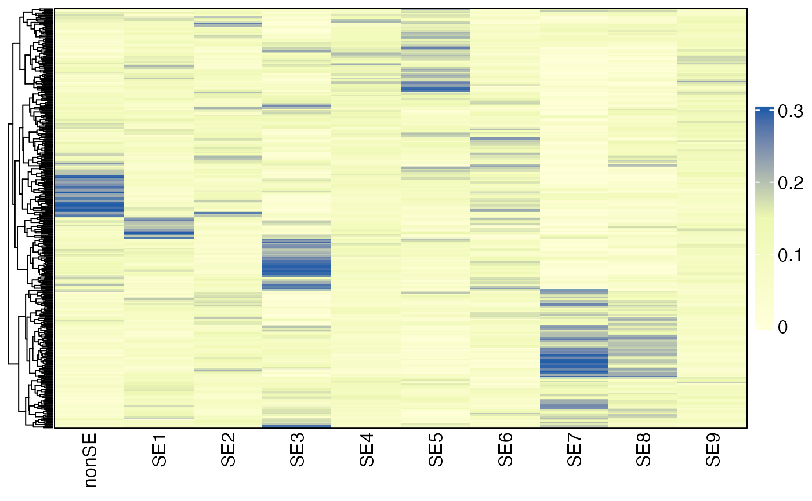

Recovery of Spatial Ecotypes from Bulk Gene Expression Data
Source:vignettes/Recovery_Bulk.Rmd
Recovery_Bulk.RmdOverview
In this tutorial, we will demonstrate how to infer spatial ecotype (SE) abundances from bulk RNA-seq data. Specifically, we will infer SE abundances from RNA-seq data of TCGA melanoma samples. The gene expression matrix is available at SKCM_RNASeqV2.geneExp.tsv, which is a Transcripts Per Million (TPM) matrix obtained from the PanCanAtlas.
First load required packages for this vignette
Loading bulk expression of TCGA melanoma samples
drive_deauth() # Disable Google sign-in requirement
drive_download(as_id("14RwnoxhIkGeLp6GXehmAXLvy8Ii2_COU"), "SKCM_RNASeqV2.geneExp.tsv", overwrite = TRUE) # download data from googledrive
bulkdata <- fread("SKCM_RNASeqV2.geneExp.tsv", sep = "\t", data.table = FALSE)
rownames(bulkdata) <- bulkdata[, 1] ## Set the first column as row names
bulkdata <- bulkdata[, -1] ## Drop the first column
head(bulkdata[, 1:5]) ## TPM matrix## TCGA.3N.A9WB.06 TCGA.3N.A9WC.06 TCGA.3N.A9WD.06 TCGA.BF.A1PU.01
## A1BG 381.0660 195.182 360.8790 176.3990
## A1CF 0.0000 0.000 0.7092 0.0000
## A2BP1 0.0000 0.000 6.3830 1.2987
## A2LD1 250.1980 160.755 97.1986 163.2340
## A2M 2209.5200 169237.000 18257.9000 6716.4500
## A2ML1 7.2698 0.000 0.0000 7.7922
## TCGA.BF.A1PV.01
## A1BG 216.8470
## A1CF 0.0000
## A2BP1 0.0000
## A2LD1 60.8727
## A2M 1740.5800
## A2ML1 0.5977SE deconvolution
The DeconvoluteSE function infers SE abundances in bulk tissues. Users can choose to either use the default model, which estimates the abundance of predefined SEs, or apply a custom model to infer the abundance of newly defined SEs based on bulk gene expression data. Before prediction, the gene expression data will be log2-transformed (if the max value exceeds 80), followed by normalization to have a mean of 0 and unit variance for each gene. To ensure accurate univariance normalization, a minimum sample size of 20 is recommended. For dataset with fewer samples, we would recommend to use public datasets as reference to estimate the mean and standard deviation
The default model is trained on pseudobulk gene expression data and predicts the abundances of nine predefined SEs along with a nonSE group, which primarily includes cancer cells and cells not associated with any SEs. The predicted SE and nonSE abundances for each sample sum to 1, making them comparable across samples.
Note: 1) SE abundances are directly comparable across samples, enabling the analysis of SE distribution patterns under different conditions. 2) Since the number of cell states varies across SEs, direct abundance comparisons between different SEs or with the nonSE group may not be meaningful. SEs represent distinct spatial multicellular communities, each defined by a unique combination of cell states.
Using default model
sefracs <- DeconvoluteSE(bulkdata, scale = TRUE)
head(sefracs)## nonSE SE1 SE2 SE3 SE4
## TCGA.3N.A9WB.06 0.19380234 0.05372667 0.16735600 0.12581663 0.07216666
## TCGA.3N.A9WC.06 0.05293689 0.13901340 0.08427617 0.08372047 0.04243859
## TCGA.3N.A9WD.06 0.27200075 0.17114795 0.06288761 0.05641549 0.10166721
## TCGA.BF.A1PU.01 0.16899510 0.13618971 0.06501306 0.09269615 0.17313296
## TCGA.BF.A1PV.01 0.12078283 0.06921834 0.05970319 0.16813008 0.11059648
## TCGA.BF.A1PX.01 0.21398415 0.04019509 0.08906215 0.04499893 0.08561680
## SE5 SE6 SE7 SE8 SE9
## TCGA.3N.A9WB.06 0.06884572 6.495692e-02 4.610809e-03 0.16471168 0.08400658
## TCGA.3N.A9WC.06 0.05623098 6.781589e-03 3.162253e-01 0.15964259 0.05873404
## TCGA.3N.A9WD.06 0.02720647 8.345475e-02 9.239064e-02 0.07760029 0.05522884
## TCGA.BF.A1PU.01 0.13404194 3.330034e-16 3.330034e-16 0.02543647 0.20449461
## TCGA.BF.A1PV.01 0.14669963 1.677658e-01 1.260194e-03 0.06961553 0.08622790
## TCGA.BF.A1PX.01 0.09930790 7.771710e-02 1.239738e-01 0.12590726 0.09923685Using custom model
After identifying SEs using SpatialEcoTyper or MultiSpatialEcoTyper, users can develop a Non-Negative Matrix Factorization (NMF) model to deconvolve SEs from bulk tissue samples, following the tutorial below.
Development of SE deconvolution models
Users can create an NMF model to deconvolve SEs from bulk gene expression data. The training data can be derived from pseudo-bulk mixtures created by aggregating single-cell transcriptomics data. In this tutorial, we will generate pseudo-bulk mixtures using single-cell RNA-seq data from a melanoma sample, which is also featured in the Recovery of Spatial Ecotypes from Single-Cell Gene Expression Data.
The raw count for this sample is available at WU2161_counts.tsv and SE recovery results are available at WU2161_RecoveredSEs.tsv.
Loading data
# Download single-cell gene expression matrix and SE recovery results.
# The downloads should be finished within 1min.
drive_download(as_id("17VAeOnz6vTt2s0ZeTrK1kITdJ3Yus4ei"), "WU2161_counts.tsv", overwrite = TRUE)
drive_download(as_id("17kFjOHhmWxWAKm-LDqy6wV27o5lvz8L2"), "WU2161_RecoveredSEs.tsv", overwrite = TRUE)
# Load single-cell gene expression matrix.
counts = fread("WU2161_counts.tsv", sep = "\t", data.table = FALSE)
rownames(counts) = counts[, 1] ## Set the first column as row names
counts = counts[, -1] ## Drop the first column
head(counts[, 1:5])
# Load SE recovery results
SEs = read.table("WU2161_RecoveredSEs.tsv", sep = "\t", row.names = 1, header = TRUE)
SEs = SEs[match(colnames(counts), rownames(SEs)), 1] # extract SE predictions
length(SEs)
table(SEs)Note: For demonstration purposes, we used 1,337 cells grouped into SEs to create pseudo-bulk mixtures. While this limited cell number offers a basic example, it may not fully capture the diverse characteristics of SEs, potentially affecting the robustness of model training and subsequent SE recovery. In practice, we recommend using a more comprehensive dataset that accurately reflects the properties of SEs, ensuring that the training process results in a reliable recovery model.
Creating pseudobulk data
The CreatePseudobulks
function will be used to create pseudo-bulk mixtures from single-cell
(spatial) transcriptomics data with all cells grouped into SEs. It
samples cell fractions from a Gaussian distribution, sets negative
fractions to 0 and re-normalizes fractions to sum to 1 across all SEs.
Based on the resulting fractions, it samples 1,000 cells per pseudo-bulk
mixture with replacement, aggregates their transcriptomes in non-log
linear space, and normalize the resulting mixture to logarithm CPM using
Seurat’s NormalizeData.
result = CreatePseudobulks(counts = counts, groups = SEs, n_mixtures = 100)
head(result$Mixtures[, 1:5]) ## Gene expression matrix of pseudobulks
head(result$Fracs) ## SE fractions in pseudobulksTraining
The NMFGenerateW function will be used to train an NMF model for SE deconvolution based on the provided SE fractions and gene expression matrix. Before applying NMF, each gene’s expression is scaled to have a mean of 0 and unit variance (recommended). To meet the non-negativity requirement of NMF, the expression matrix is transformed using the posneg method. This transformation splits the expression matrix into two matrices: one containing only positive values and the other containing the absolute values of the negative values. These two matrices are then concatenated to form the final training data for the NMF model.
W = NMFGenerateW(t(result$Fracs), result$Mixtures)
## This step should be done within 1 min
head(W)The resulting W matrix can be used to infer SE sbundances from bulk gene expression profiles by using the DeconvoluteSE function.
Deconvolution
Then you can use the new model for SE deconvolution by specifying the
W parameter:
sefracs <- DeconvoluteSE(bulkdata, W = W)Visualization of SE abundances
library(grid)
HeatmapView(sefracs, breaks = c(0, 0.15, 0.3),
show_row_names = FALSE, cluster_rows = TRUE)
Session info
The session info allows users to replicate the exact environment and identify potential discrepancies in package versions or configurations that might be causing problems.
## R version 4.4.1 (2024-06-14)
## Platform: aarch64-apple-darwin20
## Running under: macOS 15.1
##
## Matrix products: default
## BLAS: /Library/Frameworks/R.framework/Versions/4.4-arm64/Resources/lib/libRblas.0.dylib
## LAPACK: /Library/Frameworks/R.framework/Versions/4.4-arm64/Resources/lib/libRlapack.dylib; LAPACK version 3.12.0
##
## locale:
## [1] en_US.UTF-8/en_US.UTF-8/en_US.UTF-8/C/en_US.UTF-8/en_US.UTF-8
##
## time zone: America/Los_Angeles
## tzcode source: internal
##
## attached base packages:
## [1] grid parallel stats graphics grDevices utils datasets
## [8] methods base
##
## other attached packages:
## [1] SpatialEcoTyper_1.0.0 NMF_0.28 Biobase_2.64.0
## [4] BiocGenerics_0.50.0 cluster_2.1.6 rngtools_1.5.2
## [7] registry_0.5-1 dplyr_1.1.4 RANN_2.6.2
## [10] Matrix_1.7-0 data.table_1.16.0 Seurat_5.1.0
## [13] SeuratObject_5.0.2 sp_2.1-4 googledrive_2.1.1
##
## loaded via a namespace (and not attached):
## [1] RColorBrewer_1.1-3 shape_1.4.6.1 rstudioapi_0.16.0
## [4] jsonlite_1.8.8 magrittr_2.0.3 magick_2.8.5
## [7] spatstat.utils_3.1-0 rmarkdown_2.28 GlobalOptions_0.1.2
## [10] fs_1.6.4 ragg_1.3.2 vctrs_0.6.5
## [13] ROCR_1.0-11 spatstat.explore_3.3-2 htmltools_0.5.8.1
## [16] curl_5.2.2 sass_0.4.9 sctransform_0.4.1
## [19] parallelly_1.38.0 KernSmooth_2.23-24 bslib_0.8.0
## [22] htmlwidgets_1.6.4 desc_1.4.3 ica_1.0-3
## [25] plyr_1.8.9 plotly_4.10.4 zoo_1.8-12
## [28] cachem_1.1.0 igraph_2.0.3 iterators_1.0.14
## [31] mime_0.12 lifecycle_1.0.4 pkgconfig_2.0.3
## [34] R6_2.5.1 fastmap_1.2.0 clue_0.3-65
## [37] fitdistrplus_1.2-1 future_1.34.0 shiny_1.9.1
## [40] digest_0.6.37 colorspace_2.1-1 S4Vectors_0.42.1
## [43] patchwork_1.2.0 tensor_1.5 RSpectra_0.16-2
## [46] irlba_2.3.5.1 textshaping_0.4.0 progressr_0.14.0
## [49] fansi_1.0.6 spatstat.sparse_3.1-0 httr_1.4.7
## [52] polyclip_1.10-7 abind_1.4-5 compiler_4.4.1
## [55] gargle_1.5.2 doParallel_1.0.17 fastDummies_1.7.4
## [58] highr_0.11 MASS_7.3-60.2 rjson_0.2.22
## [61] tools_4.4.1 lmtest_0.9-40 httpuv_1.6.15
## [64] future.apply_1.11.2 goftest_1.2-3 glue_1.7.0
## [67] nlme_3.1-164 promises_1.3.0 gridBase_0.4-7
## [70] Rtsne_0.17 reshape2_1.4.4 generics_0.1.3
## [73] gtable_0.3.5 spatstat.data_3.1-2 tidyr_1.3.1
## [76] utf8_1.2.4 spatstat.geom_3.3-2 RcppAnnoy_0.0.22
## [79] foreach_1.5.2 ggrepel_0.9.6 pillar_1.9.0
## [82] stringr_1.5.1 spam_2.10-0 RcppHNSW_0.6.0
## [85] later_1.3.2 circlize_0.4.16 splines_4.4.1
## [88] lattice_0.22-6 survival_3.6-4 deldir_2.0-4
## [91] tidyselect_1.2.1 ComplexHeatmap_2.20.0 miniUI_0.1.1.1
## [94] pbapply_1.7-2 knitr_1.48 gridExtra_2.3
## [97] IRanges_2.38.1 scattermore_1.2 stats4_4.4.1
## [100] xfun_0.47 matrixStats_1.4.1 stringi_1.8.4
## [103] lazyeval_0.2.2 yaml_2.3.10 evaluate_0.24.0
## [106] codetools_0.2-20 tibble_3.2.1 BiocManager_1.30.25
## [109] cli_3.6.3 uwot_0.2.2 xtable_1.8-4
## [112] reticulate_1.39.0 systemfonts_1.1.0 munsell_0.5.1
## [115] jquerylib_0.1.4 Rcpp_1.0.13 globals_0.16.3
## [118] spatstat.random_3.3-1 png_0.1-8 spatstat.univar_3.0-1
## [121] pkgdown_2.1.0 ggplot2_3.5.1 dotCall64_1.1-1
## [124] listenv_0.9.1 viridisLite_0.4.2 scales_1.3.0
## [127] ggridges_0.5.6 crayon_1.5.3 leiden_0.4.3.1
## [130] purrr_1.0.2 GetoptLong_1.0.5 rlang_1.1.4
## [133] cowplot_1.1.3